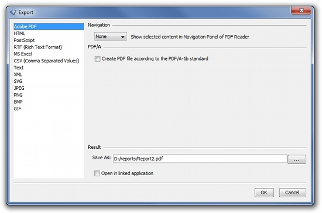

Export Formats
With i-net Crystal-Clear it is possible to export the reports in many different output formats. In the export dialog you can select the output format and configure it using format specific parameters.

The following output formats have format specific parameters: